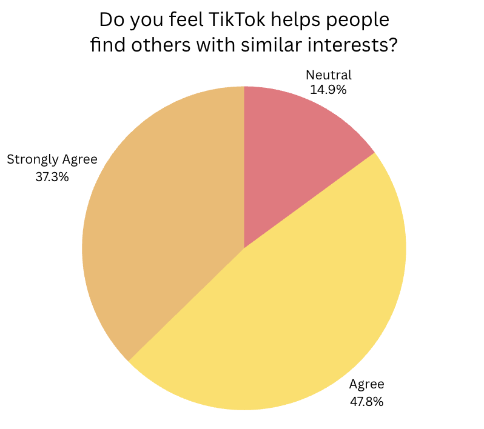

Section 04
Subcultures
This page explores how TikTok helps users discover and participate in online subcultures and niche communities. Through its algorithm, the platform connects people with shared interests such as BookTok, FoodTok, fitness communities, and other aesthetic or identity-based groups. These spaces allow users to express themselves, build community, and shape their sense of identity. This section connects to the overall project by showing how TikTok’s recommendation system influences not just what users watch, but how they find belonging and define themselves within digital culture.
Evidence
Survey Results

These results show that TikTok plays a major role in helping users discover new communities and interests, with most respondents reporting that they found new subcultures through the platform.

These results show that most respondents believe TikTok helps people find others with similar interests, supporting the idea that the platform plays an important role in building online communities. Because the algorithm connects users with content that matches their preferences, it makes it easier to discover niche groups and shared identities.

This highlights how the platform connects users to interest-based spaces that they may not have explored otherwise. The variety of communities represented also shows that TikTok supports both entertainment and personal development interests, reinforcing its role in shaping subcultures and expanding users’ identities in digital culture.
Why It Matters
Importance
This section matters to my larger research question because it shows how TikTok’s algorithm shapes not only what users watch, but also how they form interests, communities, and identities online. By helping people discover niche spaces like BookTok, lifestyle communities, and hobby-based content, TikTok plays an active role in influencing how users connect with others and define themselves in digital culture. These findings support the broader argument that TikTok’s recommendation system shapes everyday experiences, social belonging, and identity formation across multiple areas of online life.
Next Step
Continue Exploring
Section 02
Identity
How TikTok influences users’ sense of self and personal expression.
Section 02
Consumerism
How TikTok influences products, trends, and buying behavior.
Section 03
Politics
How TikTok shapes awareness and public opinion.
Section 05
Parasocial
How TikTok’s creator culture builds emotional connections with audiences.
Section 06
Reflection
A reflection on the research process, findings, and future questions about TikTok’s cultural impact.
Section 07
Sources
A list of all the sources cited in this project.
Navigation